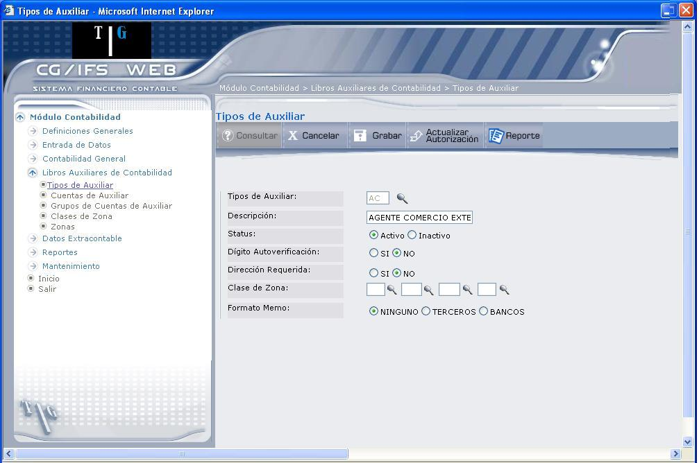
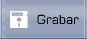
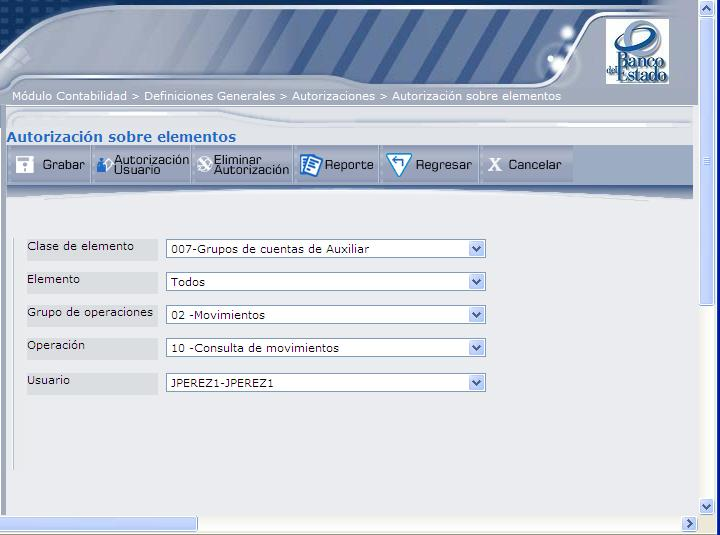

Crear Tipo de Auxiliar
Tipo de Auxiliar:
Digite el código del tipo de auxiliar que desea consultar y presione la tecla ENTER o el botón Consultar, que despliega la pantalla que muestra 1.3. Otra forma de hacerlo es seleccionar de la lista de Tipos de Auxiliar que se despliega al dar clic en el ícono (), como se muestra en 1.2.
Si el Tipo de Auxiliar se muestra inactivo sólo se pueden consultar sus datos y/o activarlo.

Figura 1. Actualizar – Tipos de Auxiliar.
Descripción:
Despliega la descripción o nombre del Tipo de Auxiliar, esta descripción puede ser actualizada. En el caso de creación, digite el nombre que corresponderá al Tipo de Auxiliar.
Status:
Indica el estado del Tipo de Auxiliar (Activo o Inactivo) según corresponda.
Dígito Autoverificación:
Marque el casillero Si o No según se desee o no que al introducir las Cuentas asociadas a este Tipo de Auxiliar, se verifique el código de las mismas a través del último dígito del código de Cuenta.
Dirección Requerida:
Seleccione una de las siguientes opciones:
- Marque el casillero Si, si desea que todas las Cuentas de Auxiliar asociadas a este Tipo lleven dirección con libre formato.
- Marque el casillero No, si se desea que sea opcional.
Clases de Zona: (opcional)
Digite hasta cuatro Clases de Zona no jerárquicas o una sola jerárquica.
En el caso de ingresar Clases de Zona no jerárquicas debe tener en cuenta que la suma de los niveles de las distintas Clases de Zona no puede ser mayor a ocho.
Si de Zona que se desea asociar 'Valida zonas', todas las Zonas definidas en las Cuentas de Auxiliar del Tipo seleccionado deben crearse previamente.
Formato de Memo:
El valor anotado en este campo determina que se muestre un formato de pantalla u otro al definir los memos de las Cuentas de Auxiliar asociadas al Tipo que se está definiendo.
Marque el casillero 'Terceros' para indicar que el Tipo de Auxiliar es utilizado para Cuentas de 'deudores/acreedores'.
Marque el casillero 'Bancos' para indicar que el Tipo de Auxiliar es utilizado para Cuentas de 'bancos'.
Marque el casillero 'Ninguno' para que el memo se muestre sin formato.
Presione la tecla ENTER o el botón Grabar para actualizar el Tipo de Auxiliar.
BOTONES


Figura 1. Autorizaciones sobre elementos.
La explicación sobre autorizaciones se encuentra en el manual Definiciones Generales.
Created with the Personal Edition of HelpNDoc: Easily create Web Help sites